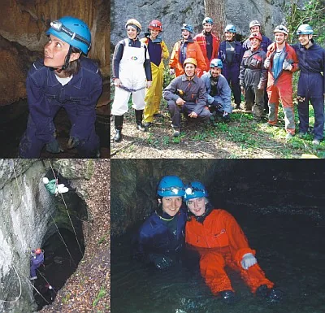

2001.-2010.
2003. godine Speleološki odsjek PDS Velebit, osim svojih škola organizirao je i održao 1. Ličku speleološku školu. Voditelj je bio Darko Bakšić...

31. Zagrebačka speleološka škola
14.3.-9.5.2001.
Voditeljica: ANA ČOP
Polaznici (22, završilo 19):
I. Meštrović, T. Meštrović, S. Cesarec, N. Cesarec, V. Galić, M. Nöthig, I. Boršić, J. Bilić, V. Laketa, A. Sudar, M. Maćešić, T. Dražina, E. Ćavar, H. Bilandžija, B. Horvat, I. Sansević, D. Župan, L. Katušić i T. Bajo
Instruktori: Ana Čop, Ana Katarina Sansević, Dean Bratušek, Filip Filipović, Dalibor Paar, Leonara Smirnjak, Jagoda Munić, Ana Bakšić, Darko Bakšić, Siniša Rešetar, Sunčica Hrašćanec, Andrej Stroj, Marko Andreis, Čedo Josipović, Dubravko Kavčić, Ivica Ćukušić, Tanja Bizjak, Tihana Dasović, Josip Petričević, Želimir Ludvig, Irena Pekčec …
32. Zagrebačka speleološka škola
13.3.-1.5.2002.
Voditelj: MARKO ANDREIS
Polaznici (28, završilo 26):
Slaven Boban, Danijel Bunjevčević, Matija Čepelak, Helena Delorko, Karla Fabrio, Marina Ferenac, Ivan Habunek, Sandra Huttek, Velimir Jozić, Ana Karamarko, Nino Kecman, Jasmin Koso, Marko Lukić, Marinko Malenica, Mirjana Medenjak, Andrea Mrkobrad, Antonija Nemet, Željka Nenadović, Bruna Pleše, Zvonimir Popović, Tomislav Rataj, Ivan Skuliber, Danijela Ševelj, Lovorka Šimunec, Petra Ujević i Neda Zubović
Instruktori: Marko Andreis, Filip Filipović, Ivica Ćukušić, Ana Katalinić, Ana Bakšić, Darko Bakšić, Dean Bratušek, Ana Katarina Sansević, Dean Bratušek, Dalibor Paar, Ana Čop, Filip Bach, Josip Petričević, Irena Jevtov, Leonara Smirnjak, Tihana Dasović, Čedo Josipović, Neven Kalac, Ivica Radić, Tanja Bizjak, Sunčica Hrašćanec, Siniša Rešetar, Ronald Železnjak, Jana Bedek, Ivana Sansević, …
33. Zagrebačka speleološka škola
12.3.-30.4.2003.
Voditelj: DALIBOR PAAR
Polaznici (23, završilo 23):
Iris Bostjančić, Lovro Čepelak, Maja Dasović, Tihana Fižulić, Tihomir Frangen, Ana Marija Galović, Sandra Hudina, Sanja Ignjatić, Marija Jakelić, Iva Kolenković, Morana Kovač, Vedran Kren, Tomislav Krpan, Branimir Majić, Goran Malčić, Gorana Mesarić, Vibor Novak, Ivana Petričević, Mirjana Popović, Igor Sokolić, Ankica Sršen, Vedran Tešić i Monika Tresk
Instruktori: Dalibor Paar, Marko Andreis, Tihana Dasović, Dean Bratušek, Leonara Smirnjak, Ivica Ćukušić, Filip Filipović, Darko Bakšić, Ana Bakšić, Damir Lacković, Danijel Lacko, Želimir Ludvig, Slaven Boban, Matija Čepelak, Ronald Železnjak, Ivana Sansević, …
34. Zagrebačka speleološka škola
10.3.-28.4.2004.
Voditelj: IVICA ĆUKUŠIĆ
Polaznici (26, završilo 25):
Denis Bottcher, Mirjana Droptina, Iva Dobrović, Tomislav Hatlak, Gordan Horvatić, Marko Ivanuš, Vibor Jelić, Marko Katalinić, Ivan Kiš, Tihana Krmpotić, Stjepan Landekić, Ivana Majstorović, Omer Mehić, Nataša Mihajlović, Stjepan Mikac, Tomislav Milčić, Maja Pavišić, Miroslav Popović, Sanja Rukavina, Mislav Sabolić V., Sanda Šarko, Veronika Tomac, Dora Tomić, Ana Vujnović, Nina Vuković, nije završio Zoran Delibašić.
Instruktori: Ivica Ćukušić, Darko Bakšić, Filip Filipović, Dalibor Paar, Darko Štefanac, Ivica Radić, Vedran Vračar, Josip Petričević, Marija Maćešić, Želimir Ludvig, Borislav Aleraj, Ivan Skuliber, Darko Troha, Ljiljana Novosel, Leonara Smir-njak, Tomislav Rataj, Ronald Železnjak, Tihomir Frangen, Hrvoje Malinar, Jagoda Munić, Ana Bakšić, Siniša Rešetar, Dubravko Šamec, Tihana Dasović, Matija Čepelak, Lovro Čepelak, …
35. zagrebačka speleološka škola
16.3.-3.4.2005.
Voditelj: FILIP FILIPOVIĆ
Polaznici (21, završilo 21):
Željko Jakupak, Krešimir Prištof, Robert Dadić, Aljoša Karlović, Danijela Salopek, Denis Devčić, Mladen Kušan, Igor Šafarić, Krešimir Faller, Matej Landeka, Monika Urdih, Alenka Goršić, Irma Ljevar, Tanja Veić, Duje Hadeljan, Aleksandar Mudronja, Luka Volf, Vedrana Hrenković, Krešimir Novosel, Dijana Žedelj, Jurica Benc
Instruktori: Filip Filipović, Slaven Boban, Marko Andreis, Dalibor Paar, Andrej Stroj, Ronald Železnjak, Ana Bakšić, Darko Bakšić, Dubravko Kavčić, Darko Štefanac, Lovro Čepelak, Filip Bach, Čedo Josipović, Tihana Dasović, …
36. Zagrebačka speleološka škola
3.3.12.4.2006.
Voditeljica: TIHANA BOBAN
Polaznici (29, završilo 26):
Slobodan Jamnić, Davorin Pongrac, Tihomir Tomašević, Valentina Buklijaš, Jasna Vidmar, Robert Šubić, Marko Erak, Sanja Marević, Loris Redovniković, Kristijan Grubišić, Ivana Jerkin, Ana Komerički, Katarina Bradić, Predrag Štrbac, Krešimir Henčić, Irena Cesarec, Iva Žitnik, Ivan Peko, Iva Starčević, Zvonimir Stipešević, Ivica Perović, Ivana Badžim, Ivan Mikačić, Marijan Sutlović, Petra Bielen i Petar Vresnik
Instruktori: Tihana Boban, Marko Andreis, Ana Katarina Sansević, Marko Ivanuš, Ivica Radić, Slaven Boban, Leonara Smirnjak, Ronald Železnjak, Matija Čepelak, Lovro Čepelak, Ivana Sansević, …
37. Zagrebačka speleološka škola
7.3.-18.4.2007.
Voditelj: SLAVEN BOBAN
Polaznici (20, završilo 20):
Denis Blažević, Andre Boljat, Tea Budinjaš, Anđela Ćukušić, Tamara Čuković, Marina Čobanov, Davor Galović, Hrvoje Heštera, Ivana Jerković, Davor Kaić, Petra Kutleša, Marko Lerota, Ivan Levar, Tomica Matišić, Marta Malenica, Josip Milić, Tamara Radan, Boško Soldić, Matija Štambuk i Ivana Vincetić
Instruktori: Slaven Boban, Ana Bakšić, Darko Bakšić, Dalibor Paar, Ronald Železnjak, Ana Katarina Sansević, Tihana Boban, Matija Čepelak, Lovro Čepelak, …
38. Zagrebačka speleološka škola
26.3.-30.4.2008.
Voditelj: MATIJA ČEPELAK
Polaznici (31, završilo 29):
Ivan Turčin, Juraj Turčin, Ana Frangeš, Ivo Frangeš, Josip Krišto, Krešimir Jurišić, Ante Poljičak, Tea Selaković, Siniša Radović, Davor Mikolčić, Marija Bašić, Dario Kompar, Gordana Zwiker, Ivana Nikolić, Nina Bjeliš, Maja Marinović, Marija Delač, Zoltan Eke, Ivana Sučić, Ratko Vojnović, Domagoj Drmić, Iva Juršić, Ivan Uravić, Maja Hrustić, Vanja Rudić, Robert Teodor Šapak, Hrvoje Šimunac, Dražen Bosak i Lana Đonlagić
Instruktori: Matija Čepelak, Filip Filipović, Filip Bach, Slaven Boban, Lovro Čepelak, Ana Bakšić, Darko Bakšić, Igor Jelinić, Tihana Boban, Luka Mudronja, Marinko Malenica, …
39. Zagrebačka speleološka škola
4.3.-22.4.2009.
Voditelj: RONALD ŽELEZNJAK
Polaznici (31, završilo 29):
Anđelko Očić, Antun Fajs, Boris Marić, Dino Huzanić Mišek, Dino Križnjak, Filip Franković, Goran Kovačić, Gordan Horvat, Hrvoje Andabak, Ivana Jurlina, Ive Alviž, Jagor Koprek, Koraljka Jelić, Kristina Mumić, Lina Šojat, Mario Musulin, Mario Strelar, Marko Maričević, Marko Masnec, Mia Galić, Nikolina Klopotan, Pavel Ankon, Sanja Ohnjec, Siniša Sili, Srđan Pichler, Sven Zbanatski, Vedran Ferenčak, Vesna Katić i Željko Domitrović
Instruktori: Ronald Železnjak, Ana Bakšić, Darko Bakšić, Matija Čepelak, Dalibor Paar, Slaven Boban, Tihana Dasović, Čedo Josipović, Filip Filipović, Luka Mudronja, Tihana Boban, Slaven Boban, Marinko Malenica, Marta Malenica, Tamara Čuković…
40. Zagrebačka speleološka škola
4.3.-8.4.2010.
Voditelj: DEAN BRATUŠEK
Polaznici: (26, završilo 26):
Anja Žmegač, Dalibor Obrovac, Darija Šarić, Dina Kovač, Dragana Šolaja, Dunja Zbiljski, Đuro Kužumilović, Hrvoje Ivanić, Ida Belas, Iva Jurković, Ivan Miloš, Kristina Rojnica, Mateja Blažević, Marija Repanić, Marijan Marović, Marko Račić, Marko Rakovac, Miljenko Nino Puljek, Marin Mustapić, Petar Hrženjak, Stipe Koščak, Tihana Smoljanović, Una Tulić, Vanda Vukadinović, Zrinka Antičević i Zrinka Nedeljković
Instruktori: Dean Bratušek, Ronald Železnjak, Marta Malenica, Dalibor Paar, Tamara Čuković, Ivica Ćukušić, Filip Filipović, Ivica Radić, Čedo Josipović, Marinko Malenica, Robert Erhardt, Darko Bakšić, Slaven Boban, Tihana Boban, Ana Bakšić, Loris Redovniković…
2010. godina, 40. zagrebačka speleološka škola
___________________________________________________________________________________
U organizaciji SD Lika iz Gospića i provedbi SO Velebit, održana je od 16.5.-15.6.2003.
Prva lička speleološka škola.
Voditelj škole: DARKO BAKŠIĆ
Školu je završilo šest polaznika;
Josip Tomaić (SDL), Azo Skalonić (SDL), Goran Jurković (SDL), Mirta Vrbek (SOV), Ena Vrbek (SOV), Dubravka Tortić (SOV)
Instruktori: Mladen Šaban, Darko Bakšić, Ana Bakšić, Irena Jevtov, Bojana Horvat, Marijan Tortić, Boris Vrbek, Josip Petričević, Tihana Dasović, Maja Dasović, Slaven Boban, Zvonimir Popović, Bernarda Boban, Irena Jevtov, Dubravko Šamec, Dijana, Lovro Čepelak, Goran Jurković, Dijana ?
2004., Ravni Dabar 2004. Ravni Dabar, Japaga 7 2004. Tounjčica 2004. godina, 34. zagrebačka speleološka škola, foto Darko Bakšić